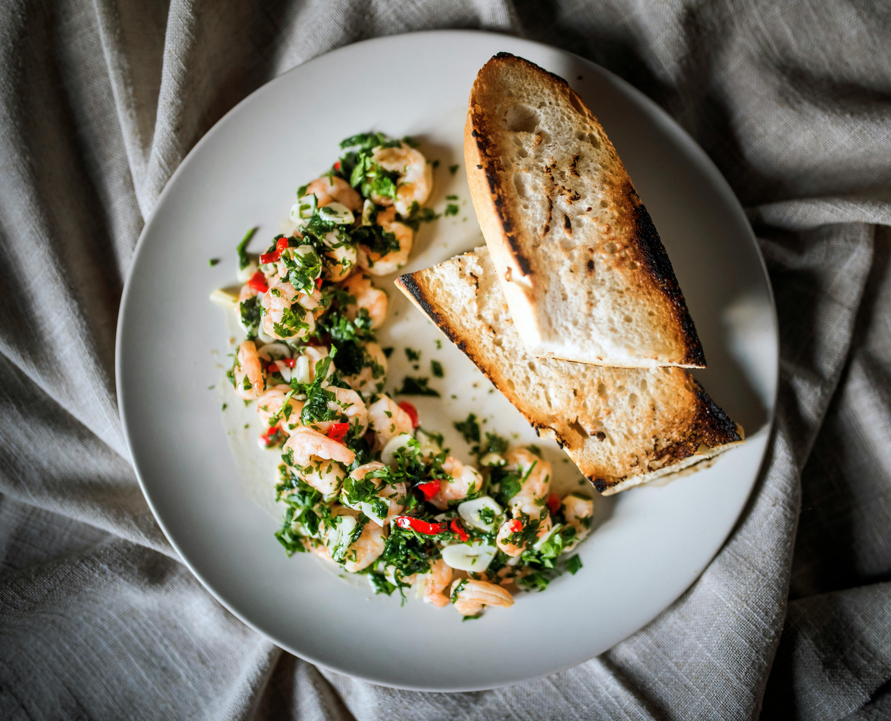

All Recipes
Garlic Shrimp

Image created by Piotr Arnoldes Pexels.com
Delicious and fast
Give this garlic shrimp recipe a try if you like shrimp and love garlic. It's easy, fast, and absolutely delicious. I hope you enjoy it!
Ingredients
- Olive oil 1½ tbsp
- Shrimp, peeled and deveined 500g
- Salt to taste
- Cloves garlic, finely minced
- Red pepper flakes ¼ teaspoon
- Lemon juice 3 tbsp
- Caper brine 1 tbsp
- old butter, cut into 4 equal pieces, divided 2 tbsp
- chopped flat-leaf parsley, divided ⅓ cup
- water,1 teaspoon or as needed